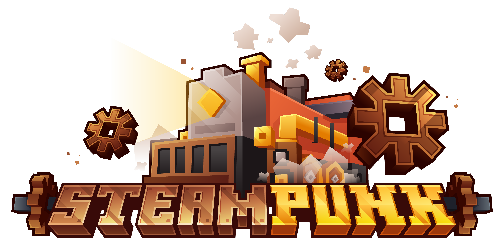

Instrucciones
- Authenticate
- Con tu cuenta de Minecraft
- Con tu cuenta de Twitch
- Descarga el Modpack
- Descarga CurseForge aqui
- Instala el Modpack en CurseForge
- dale click en el boton "+ Create Custom Profile"
- dale click en el link "import"
- selecciona el modpack que descargaste